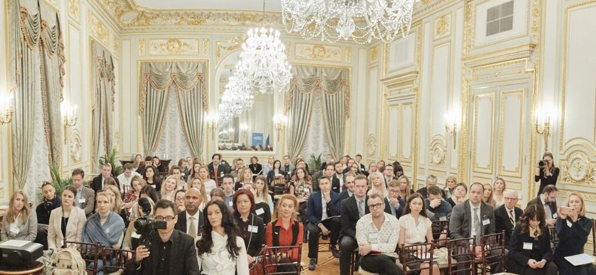

YFNY | 2016
2 декабря прошел «Молодежный форум в Нью-Йорке», посвященный сохранению исторических корней и консолидации русско-американской молодежи в США.
Организатором выступил Русский центр в Нью-Йорке (Russian Center NY) при поддержке Посольства РФ в США и Консульства РФ в Нью-Йорке, Россотрудничества, Департамента внешнеэкономических и международных связей Москвы и при содействии Общества Русская молодежь Америки.
#YFNY #YFNY2016 #RCNY
Фото: Роман Махмутов, Татьяна Гаврилова
Участники форума — молодые соотечественники из многих уголков США, представляющие молодежные и студенческие организации, русскоговорящую молодежь США.
Форум прошел в Генеральном консульстве Российской Федерации в Нью-Йорке. Открывая форум Генеральный консул РФ в Нью-Йорке Игорь Голубовский отметил, что «мероприятия, посвященные истории и культуре России стали традиционными в Нью-Йорке». Андрей Бондарев, советник Посольства России в США, зачитал приветствие от директора Департамента по работе с соотечественниками за рубежом Олега Мальгинова, в котором Олег Мальгинов отметил, что «форум стал востребованным и интересным форматом для молодых соотечественников» и пожелал плодотворных дискуссий, творческого настроя и всего самого доброго.
Вероника Невзорова, представитель Россотрудничества в Нью-Йорке, передала приветственное слово молодым соотечественникам США от руководителя Россотрудничества Любови Глебовой: «Российская Федерация уделяет особое внимание развитию гуманитарных связей между нашими соотечественниками, проживающими за рубежом. Мы высоко ценим ваш вклад в сохранение и отстаивание общих для нас культурных ценностей. Сегодня от эффективной совместной деятельности молодежных общественных объединений во многом зависит дальнейшее формирование единого культурного, информационного и образовательного пространства для российской молодежи, проживающей за рубежом», — говорится в обращении.
Владимир Лебедев, директор Московского Дома соотечественника и советник Мэра Москвы в своем выступлении отметил: «Первая и основная задача форума — дать возможность русскоговорящим американцам поговорить об исторических связях с Родиной, о будущем двусторонних отношений». По его словам, «русская Америка начала находить больше точек соприкосновения как внутри себя, так и с Россией, и это — естественная тяга к нахождению своих исторических корней». «Нью-Йорк — это давно сформировавшийся центр российского присутствия в Америке, — указал он. — Русскоговорящее сообщество здесь играет очень большую положительную роль, ведь у нас — общая культура».
Организаторы мероприятия подготовили для участников насыщенную программу, в том числе две панельные дискуссии. Первая была посвящена сохранению русских традиций, на которой поделились своим опытом представители русской иммиграции первой половины прошлого века и духовенство. На второй части обсуждались вопросы укрепления связей с Россией, консолидации русско-американской молодежи в Америке и активизация участия молодых русских американцев в общественно-политической жизни США.
Фото: Роман Махмутов, Татьяна Гаврилова
Кроме этого в рамках форума был проведен конкурс презентаций проектов молодежи США, а прошедшие отбор проекты были представлены гостям форума. Роман Махмутов, который выступил инициатором этой части программы, представил видеоролик Всемирного фестиваля молодёжи и студентов 2017. Роман считает, что «выступление молодых соотечественниками со своими проектами позволило получить ценные рекомендации от экспертов, а также поддержку единомышленников и новые профессиональные контакты».
Первый приз конкурса проектов молодежи получил Роман Махмутов, который представил фотопроект «создание типологии соотечественников Нью-Йорка и Вашингтона — Соотечественники», второй — Сергей Гладыш с проектом «Россия Своими Глазами — Russia Firsthand», третий — Александр Петров с проектом освещения мероприятий — афиша Америки на русском — EventCartel.com.
Елена Брэнсон, президент Русского Центра в Нью-Йорке, рассказала, что работа с молодыми соотечественниками является важным направлением деятельности Русского центра в Нью-Йорке. «Мы обращаем особое внимание на активизацию участия молодых русских американцев в общественно-политической жизни США, на помощь русскоязычной молодежи в освоении избирательной системы США для активного участия в выборах как в качестве кандидатов, так и избирателей, для представления русских американцев в органах власти США. Мы видим, что в последнее время происходит расширение инициатив русской диаспоры, и мы стараемся помогать этому».